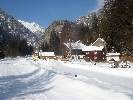
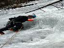
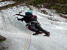

Ľady Maltatalu
2012 · Rakúsko
Ľady Maltatalu 2012
Ankogel gruppe, Austria
Pôvodne mal písať správu z tejto akcie Ivan, ale sa nato tak trochu vyprdol, takže ja aspoň takto telegraficky.
Je koniec januára, po ľadoch na Slovensku a blízkom Rakúsku ani chýru ani slychu a tak sa posúvame na miesta kde isto sú. Rakúsky Maltatal. Zvyčajne sa tu chodí na vyvrcholenie ľadovej lezeckej sezóny, no čo už.
Luba, člena pôvodnej zostavy, spred šiestich rokov nahrádza náš český kamarát Fištrón a do celej zostavy patria ešte Ivan, Horár a ja.
Do ľadov ideme takmer rovno z auta, nakoľko to už tu máme obhliadnuté z minula, nemusíme až tak moc sondovať prostredie. Na prvý deň volíme ľad nám známy už z minula. Aluhol. Dvojky sú v tejto zostave jasné, Ivan s Fištrónom, Horár a ja.
Podvečer nás čaká neľahká úloha, musíme si nájsť miesto kde zložíme naše hlávky.
Ubytovanie nakoniec máme ( na našu veľkú radosť ), tak ako minule, v špičkovom miestnom ubytovacom zariadení. J





Deň druhý. Náš dnešný cieľ je proti prúdy rieky Malta. Pravý Klammfall ( Mareiner )
Účasná ľadovo-snehová túra.


Deň tretí, Superfeucht. Opäť výborný deň, k autu sa vraciame až za súmraku, teplomer ukazuje -13 stupňový mráz. Balíme veci do auta, čo-to zjeme a v miestnom penzione dopĺňame B-vitamíny a už len nekonečná cesta do Bratislavy.


Vynikajúca akcia, lezenie v niekoľkodĺžkových ľadových cestách a kopec srandy s kamarátmi.
Dušan.
P
Pôvodná stránka: archív horecsport.sk